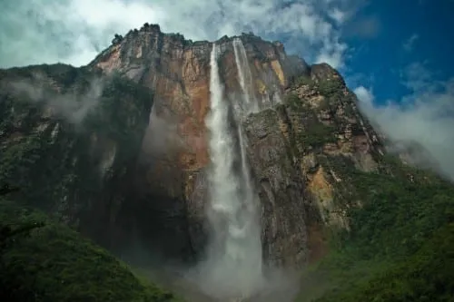
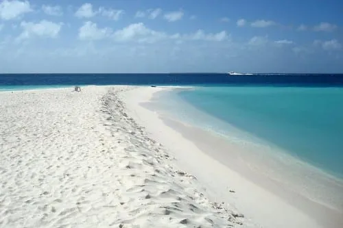
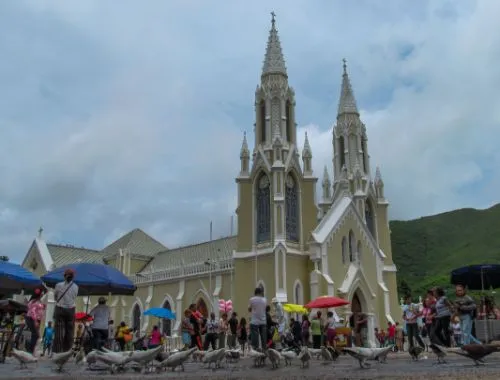

TurismoON: una página para tu paraíso
1-Salto Ángel
El símbolo del turismo en Venezuela: patrimonio mundial de la humanidad, récord Guinnes por el salto de agua mas alta del mundo (979 metros),este gran destino ubicado dentro del Parque Nacional Canaima es uno de los lugares de Venezuela que sirvió de inspiración para numerosos libros y películas como “UP”.
Ubicado en medio de la selva, los chorros de agua del Salto Angel caen desde lo alto del Auyantepui, uno de los numeros tepuyes del Parque Nacional Canaima. ¿Algo que hace aún más increíble este lugar? El descubrimiento reciente (2013) de la cueva de cuarcita más grande del mundo, en las profundidades de una de las grietas del tepuy.
2-Los Roques
Los Roques ofrece las playas más paradisíacas del Caribe, de aguas turquesa y arena blanca y con una diversidad marina increíble, ideales para viajar y practicar el buceo.
Además de su belleza, el Parque Nacional Los Roques es un archipiélago de numerosas islas y es considerado el parque marino más grande del Caribe con arrecifes de coral casi vírgenes y un mar tranquilo y cálido, lo que lo hacen sin duda un excelente destino que visitar en Venezuela.
3-Isla de Margarita
Decir Isla de Margarita como un todo no le hace justicia, ya que “la perla del Caribe” tiene demasiadas cosas para ver y disfrutar del turismo. No en vano para muchos encabeza la lista de los lugares turísticos en Venezuela para sus viajes, bien sea en Ferry desde Puerto La Cruz o por vía aerea.
Si el número de 50 playas aptas para el disfrute (Como Playa El Agua, Playa Guacuco, Playa El Yaque o Playa Parguito) no te parece suficiente, súmale castillos impresionantes como el Santa Rosa (La Asunción) y el San Carlos de Borromeo (Pampatar), parques acuáticos como Waterland y el gran Parque El Agua, los centros comerciales más grandes y modernos del Caribe, y mucho más. Además, otra buena opción es visitar las islas cercanas de Coche y Cubagua.
Página creada por Sergio Delgado
Urbe 2020
Urbe 2020